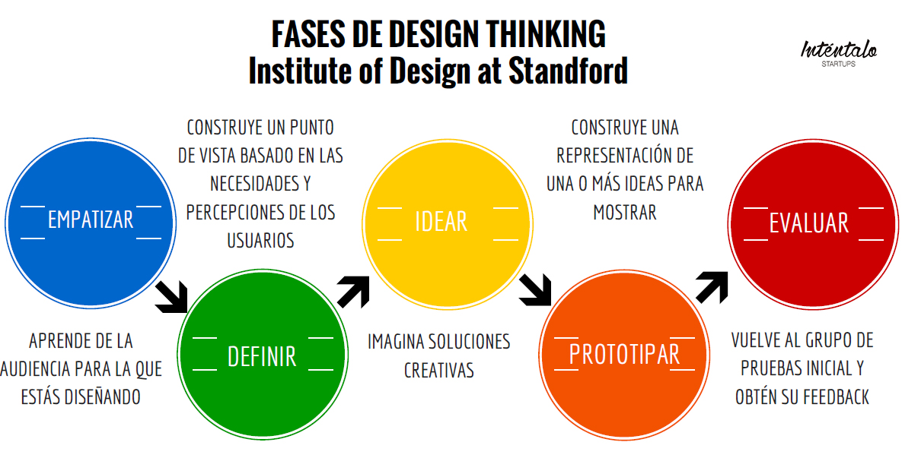
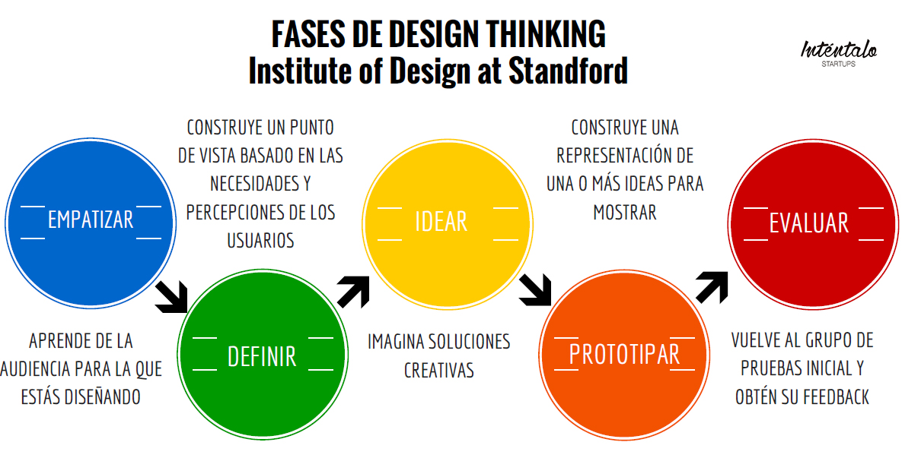

Taller de Dising Thinking
“Design thinking” se presenta como una metodología para desarrollar la innovación centrada en las personas, ofreciendo una lente a través de la cual se pueden observar los retos, detectar necesidades y, finalmente, solucionarlas.
 
alt=">

alt=">